BRAND IDENTITY / CASE STUDY
Orizon.
Travel. Respect. Repeat.
A visual identity for a more responsible way to explore the world.
01 / THE BRIEF
Travel should leave a positive mark
Orizon is a concept for a sustainable travel agency built around a simple idea: memorable journeys can respect the environment and support local communities. The identity needed to balance the excitement of exploration with a clear commitment to responsible tourism.
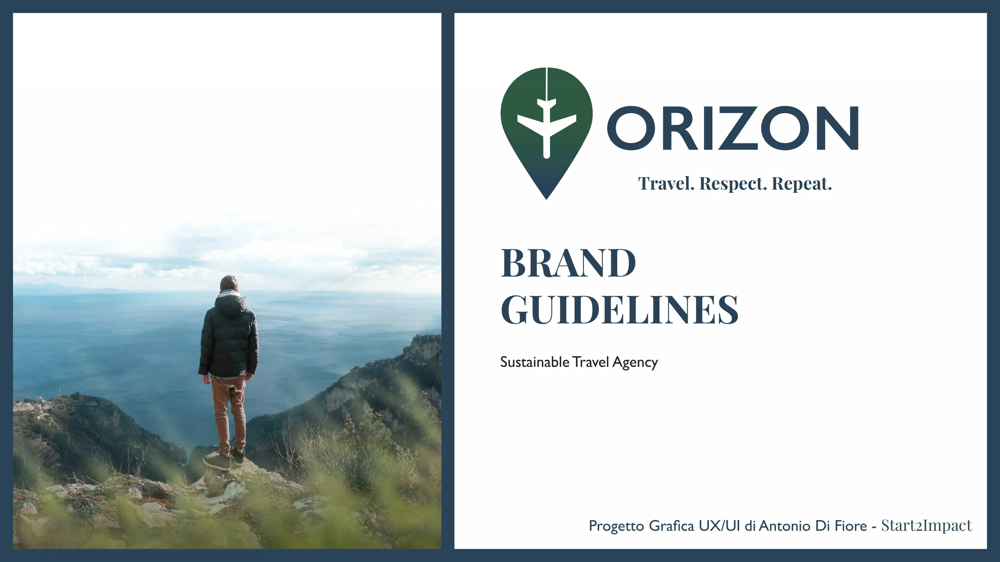
02 / BRAND STRATEGY
Beyond the destination
The brand vision is to help people travel consciously and regeneratively. Its mission is to design memorable trips that respect nature and create value for local communities. The proposed experiences include longer journeys, honeymoons and tailored group trips.
03 / LOGO DESIGN
Three symbols, one idea
The Orizon mark brings together a map pin for destination, a leaf for sustainability, and an airplane for movement and discovery. A gradient between green and deep blue suggests the meeting of land and sea.
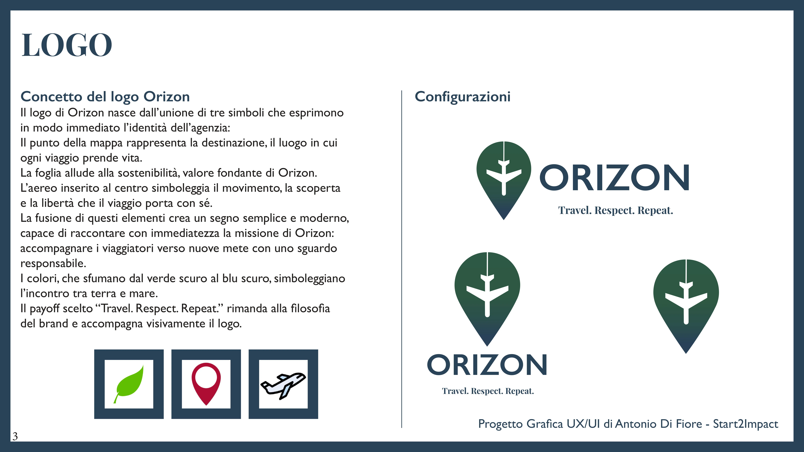
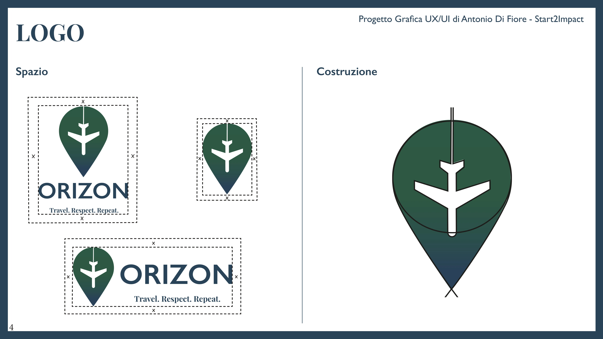
04 / LOGO SYSTEM
Designed to adapt
The guidelines explore logo scalability, colour variations, acceptable combinations and incorrect uses to keep the identity consistent across formats.
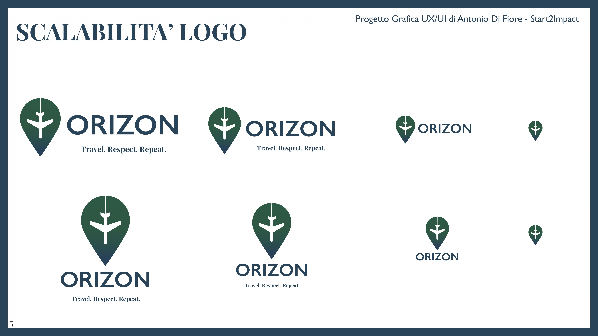
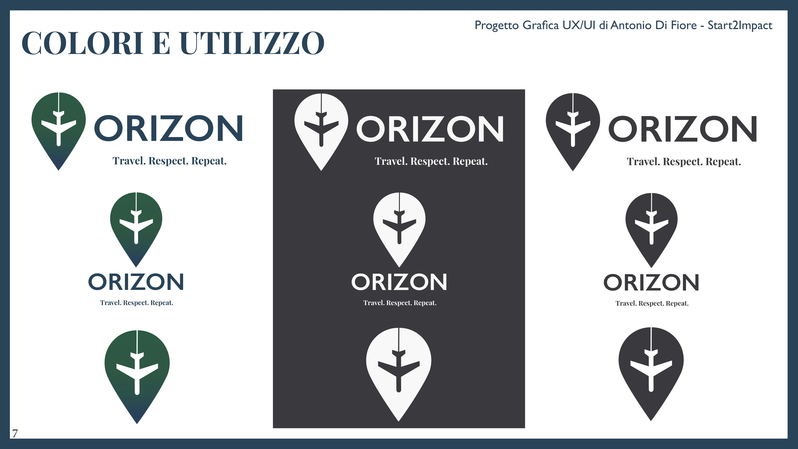
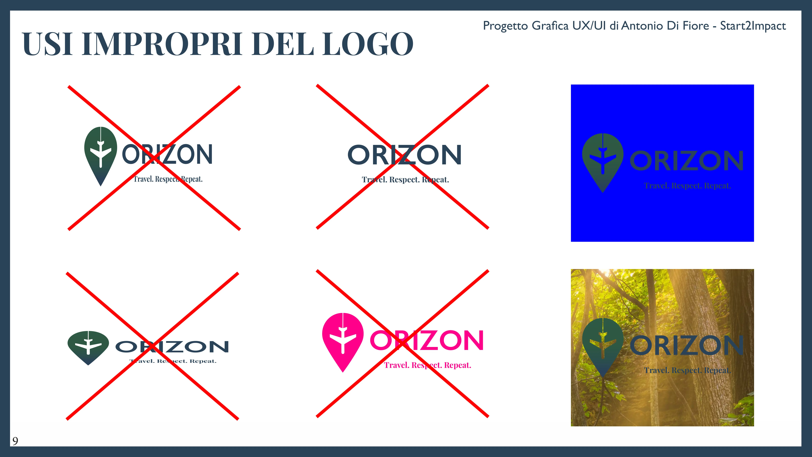
05 / VISUAL LANGUAGE
Nature, clarity, confidence
The palette uses deep green, navy blue, ochre, charcoal and off-white. The original guidelines pair Playfair Display for expressive headlines with Gill Sans for clear supporting text.
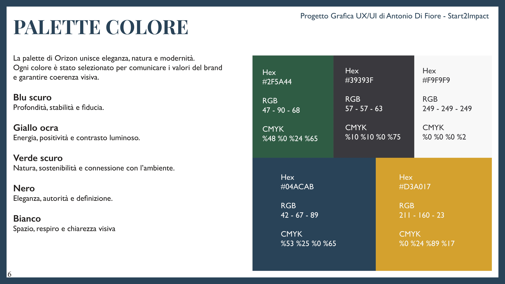
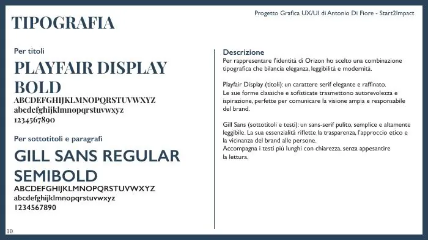
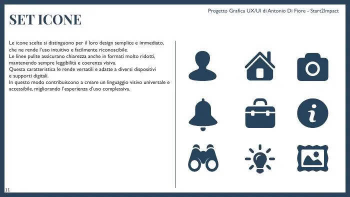
06 / SOCIAL APPLICATIONS
An identity across channels
The system extends to branded YouTube, Facebook and Instagram layouts, including cover imagery, profile treatments and promotional content. Campaign concepts include the “Avventure Green” travel package and an Eco-Travel Meetup.
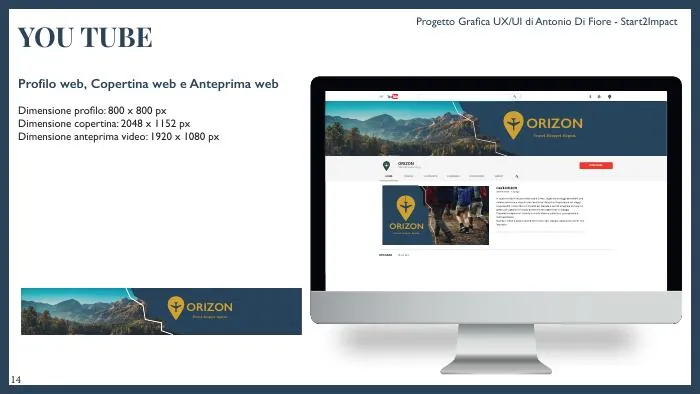
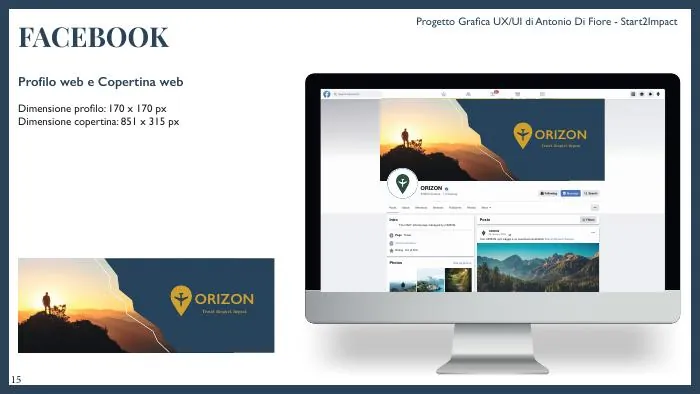
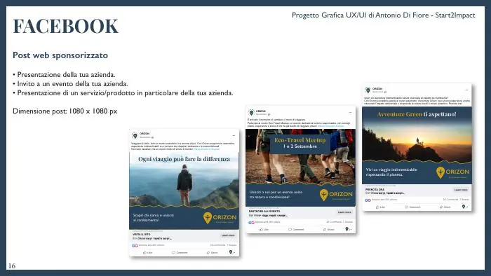
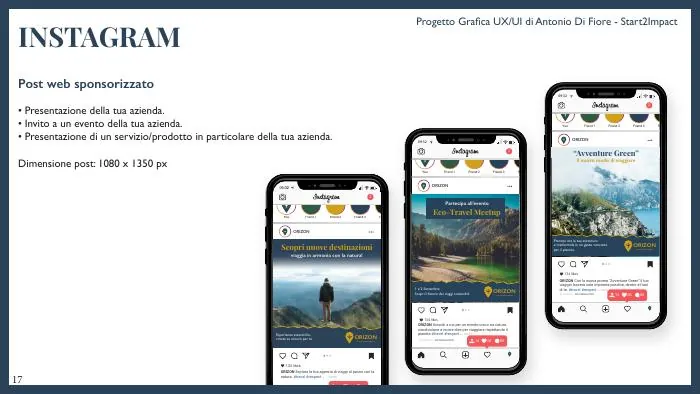
07 / PROJECT OUTCOME
A cohesive brand system
The result is a set of brand guidelines and social media concepts designed to make Orizon recognisable, flexible and aligned with its responsible-travel positioning. This is a design project presented through its original academic deliverables.